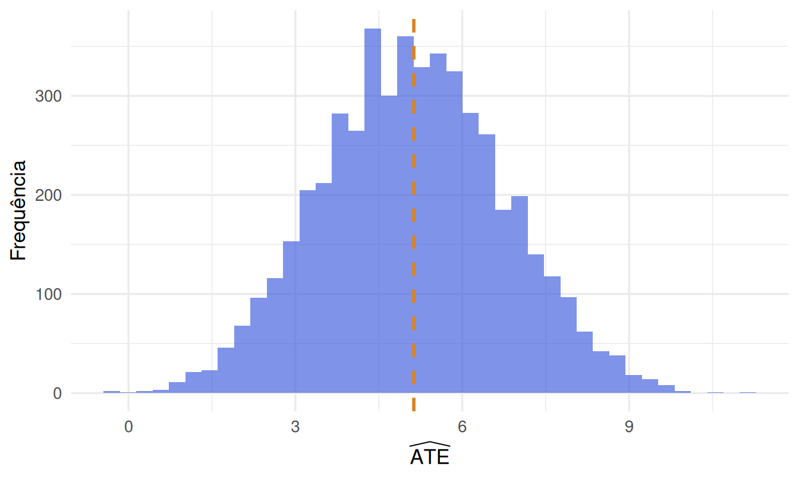

1.4 Os três aspectos do delineamento experimental
Seguindo a formalização clássica (Cochran & Cox, 1957; Fisher, 1935b), todo desenho experimental resolve simultaneamente três problemas, correspondentes a três famílias de decisões:
- Desenho de tratamentos — o quê comparar: quais fatores, quantos níveis, se são cruzados ou aninhados.
- Desenho para controle do erro — como atribuir tratamentos às unidades para que a comparação seja justa: aleatorização, blocagem, uso de covariáveis.
- Desenho amostral — quantas unidades e como medir a resposta: número de réplicas, submuestragem, esquema de medição repetida.
Os três princípios abaixo pertencem sobretudo ao segundo aspecto, mas condicionam os outros dois.
1.4.1 Repetição (replicação)
Repetir um tratamento em várias unidades experimentais independentes permite estimar a variabilidade do erro experimental e, com isso, testar se a diferença observada entre tratamentos é maior do que se esperaria só por acaso. Sem repetição genuína (não confundir com submuestreo — Seção 1.2), não há como estimar o erro e, portanto, não há inferência válida.
1.4.2 Aleatorização
Atribuir tratamentos às unidades experimentais por sorteio — e não por conveniência, ordem de chegada ou julgamento do pesquisador — garante que, em expectativa, os grupos de tratamento sejam comparáveis em todas as variáveis, observadas ou não. É a aleatorização que permite interpretar uma diferença entre médias de grupo como efeito causal do tratamento, e não como reflexo de alguma variável de confusão. Sem aleatorização, o grupo controle deixa de ser um substituto crível do contrafactual do grupo tratado.
1.4.3 Por que a aleatorização funciona: o modelo de resultados potenciais
A afirmação “a aleatorização elimina viés de confusão” costuma ser aceita por apelo intuitivo. Ela também admite uma justificativa formal, devida a Neyman (1990) e depois generalizada por Rubin (1974) — o chamado modelo causal de Neyman-Rubin, ou modelo de resultados potenciais, que usaremos ao longo de todo o curso sempre que compararmos tratamentos (ver Imbens & Rubin, 2015 para um tratamento completo).
Para cada unidade experimental \(i = 1, \dots, N\) e cada tratamento \(t\) que ela poderia receber, postulamos a existência de um resultado potencial \(Y_i(t)\): o valor que a resposta assumiria se a unidade \(i\) recebesse o tratamento \(t\). Com dois tratamentos (\(t \in \{0,1\}\)), cada unidade tem dois resultados potenciais, \(Y_i(0)\) e \(Y_i(1)\), mas o experimento só revela um deles — o correspondente ao tratamento efetivamente sorteado para \(i\). O outro é, por definição, contrafactual: nunca observável. Esse é o problema fundamental da inferência causal.
A Tabela 1.5 concretiza a definição: é a chamada tabela científica (science table), um recurso didático padrão na exposição do modelo de Neyman-Rubin. Ela lista os dois resultados potenciais de cada unidade lado a lado — algo que nenhum conjunto de dados real exibe, porque metade da tabela é, por construção, contrafactual. A coluna \(Y_i^{\text{obs}}\) mostra o que o experimento de fato revela depois que \(Z_i\) é sorteado: exatamente uma das duas colunas anteriores, nunca as duas.
| Unidade | \(Y_i(0)\) | \(Y_i(1)\) | \(Z_i\) | \(Y_i^{\text{obs}}\) |
|---|---|---|---|---|
| \(i=1\) | 18,2 | ? | 0 | 18,2 |
| \(i=2\) | ? | 24,7 | 1 | 24,7 |
| \(i=3\) | 21,4 | ? | 0 | 21,4 |
| \(i=4\) | ? | 27,1 | 1 | 27,1 |
| \(i=5\) | 16,9 | ? | 0 | 16,9 |
| \(i=6\) | ? | 22,3 | 1 | 22,3 |
Duas suposições tornam o problema tratável:
- SUTVA (Stable Unit Treatment Value Assumption): o resultado potencial de \(i\) depende só do tratamento atribuído a \(i\), não do tratamento atribuído a outras unidades (sem interferência entre unidades) nem de “versões ocultas” do tratamento.
- O estimando causal de interesse é tipicamente o efeito médio do tratamento, \[ \text{ATE} = \frac{1}{N}\sum_{i=1}^N \big[Y_i(1) - Y_i(0)\big] = \bar Y(1) - \bar Y(0), \] uma média sobre unidades de uma quantidade que, para cada unidade individualmente, nunca podemos calcular (porque exigiria observar os dois resultados potenciais da mesma unidade).
Seja \(Z_i \in \{0,1\}\) o indicador de qual tratamento a unidade \(i\) recebeu. O que o experimento observa é \(Y_i = Z_i Y_i(1) + (1-Z_i) Y_i(0)\). O estimador natural do ATE é a diferença de médias observadas entre os grupos, \[ \widehat{\text{ATE}} = \frac{1}{n_1}\sum_{i:\,Z_i=1} Y_i \;-\; \frac{1}{n_0}\sum_{i:\,Z_i=0} Y_i = \bar Y_1^{\,obs} - \bar Y_0^{\,obs}. \]
Por que a aleatorização garante \(E[\widehat{\text{ATE}}] = \text{ATE}\)? A chave é que os \(2N\) valores \(\{Y_i(0), Y_i(1)\}_{i=1}^N\) são tratados como fixos (características das unidades, não variáveis aleatórias) — a única aleatoriedade no experimento é qual subconjunto de \(n_1\) unidades, entre os \(\binom{N}{n_1}\) possíveis, recebe \(Z_i=1\). Sob esse mecanismo de aleatorização (cada subconjunto igualmente provável), \(Z_i\) é independente dos pares \((Y_i(0), Y_i(1))\) para todo \(i\), o que dá
\[ E\!\left[\bar Y_1^{\,obs}\right] = E\!\left[\frac{1}{n_1}\sum_{i:\,Z_i=1} Y_i(1)\right] = \frac{1}{N}\sum_{i=1}^N Y_i(1) = \bar Y(1), \]
e, simetricamente, \(E[\bar Y_0^{\,obs}] = \bar Y(0)\) — porque, sob aleatorização, o subconjunto sorteado para tratamento é uma amostra aleatória simples (sem reposição) do conjunto de todas as unidades, e a média amostral de uma AAS é não-viesada para a média da população da qual foi extraída, qualquer que seja essa população (aqui, a “população” dos \(N\) valores fixos \(Y_i(1)\)). Logo \(E[\widehat{\text{ATE}}] = \bar Y(1) - \bar Y(0) = \text{ATE}\): a diferença de médias observadas é não-viesada para o efeito causal médio, sem nenhuma suposição sobre a distribuição de \(Y_i(t)\) — o mesmo espírito, aliás, do teste de aleatorização que retomaremos com rigor no Capítulo 3.
$N=40$ parcelas de terra têm fertilidade heterogênea e fixa. Postulamos, para cada parcela $i$, dois resultados potenciais de produtividade: $Y_i(0)$ sob a variedade V1 e $Y_i(1)$ sob a variedade V2 (com efeito heterogêneo, maior nas parcelas mais férteis). Simulamos os $2N=80$ valores fixos — nunca observados simultaneamente na prática — só para poder verificar a demonstração acima por Monte Carlo.
set.seed(2026)
N <- 40
fertilidade <- runif(N, 0, 10)
Y0 <- 20 + 1.5 * fertilidade + rexp(N, rate = 0.3) # potencial sob V1 — deliberadamente não normal
Y1 <- Y0 + 4 + 0.3 * fertilidade # potencial sob V2 — efeito heterogêneo (maior se fértil)
ATE_verdadeiro <- mean(Y1 - Y0)
ATE_verdadeiro## [1] 5.12961n1 <- 20 # metade das parcelas recebe V2
n_rep <- 5000 # numero de reamostragens do mecanismo de aleatorizacao
ate_hat <- replicate(n_rep, {
idx_trat <- sample(N, n1) # sorteio de qual subconjunto recebe V2
mean(Y1[idx_trat]) - mean(Y0[-idx_trat]) # so o potencial "revelado" e observado
})
c(ATE_verdadeiro = ATE_verdadeiro, media_simulada = mean(ate_hat),
diferenca = mean(ate_hat) - ATE_verdadeiro)## ATE_verdadeiro media_simulada diferenca
## 5.12961038 5.11388421 -0.01572617
Figure 1.3: Distribuição de Monte Carlo de ATE-chapéu sob 5.000 reamostragens independentes do mecanismo de aleatorização (quais 20 das 40 parcelas recebem a variedade V2), com o ATE verdadeiro (fixo, calculado sobre os 2N resultados potenciais) marcado pela linha tracejada.
Cada uma das 5.000 barras do histograma corresponde a um sorteio diferente de quais 20 parcelas recebem V2 — os \(2N=80\) resultados potenciais nunca mudam entre reamostragens, só a atribuição \(Z_i\) muda, exatamente como a prova algébrica pressupõe. A distribuição de \(\widehat{\text{ATE}}\) tem alguma dispersão (não é possível saber o ATE exatamente com uma única reamostragem de 40 parcelas), mas está centrada exatamente na linha tracejada — o ATE verdadeiro e fixo —, e não em nenhum outro valor. Essa é a confirmação empírica, por simulação, de que \(E[\widehat{\text{ATE}}] = \text{ATE}\): nenhuma suposição de normalidade foi usada para gerar \(Y_i(0)\) (a distribuição exponencial deslocada foi escolhida de propósito, para deixar claro que o resultado não depende de normalidade), e a média do histograma bate com o ATE verdadeiro de qualquer forma.
Sem aleatorização — por exemplo, se as unidades se autosselecionam para o tratamento — \(Z_i\) pode depender de \((Y_i(0), Y_i(1))\) (unidades com \(Y_i(1)\) potencialmente maior podem ser justamente as que “escolhem” o tratamento), quebrando a igualdade \(E[\bar Y_1^{\,obs}] = \bar Y(1)\): a diferença de médias observadas deixa de estimar o ATE e passa a misturar o efeito causal com viés de seleção — exatamente o problema levantado na Questão 3 da caixa de discussão a seguir.
1.4.3.1 Quão dispersa é \(\widehat{\text{ATE}}\)? A fórmula de variância de Neyman
Não-viés diz que o histograma da Figura 1.3 está centrado no lugar certo, mas nada diz sobre sua largura. Neyman (1990) derivou a variância exata de \(\widehat{\text{ATE}}\) sob o mecanismo de aleatorização — tratando, como antes, os \(2N\) resultados potenciais como constantes fixas e a única fonte de aleatoriedade sendo qual subconjunto de tamanho \(n_1\) recebe \(Z_i=1\) (amostragem sem reposição de um total de \(N\) unidades). Sejam \[ S_1^2 = \frac{1}{N-1}\sum_{i=1}^N \big(Y_i(1) - \bar Y(1)\big)^2, \qquad S_0^2 = \frac{1}{N-1}\sum_{i=1}^N \big(Y_i(0) - \bar Y(0)\big)^2 \] as variâncias populacionais (finitas, sobre as \(N\) unidades) dos dois resultados potenciais, e \[ S_{01}^2 = \frac{1}{N-1}\sum_{i=1}^N \Big[\big(Y_i(1)-Y_i(0)\big) - \text{ATE}\Big]^2 \] a variância populacional dos efeitos individuais de tratamento \(\tau_i = Y_i(1) - Y_i(0)\). O resultado de Neyman é \[ \text{Var}\big(\widehat{\text{ATE}}\big) = \frac{S_1^2}{n_1} + \frac{S_0^2}{n_0} - \frac{S_{01}^2}{N}. \] A intuição: os dois primeiros termos são exatamente o que se esperaria de duas médias amostrais independentes (como em um teste \(t\) de duas amostras usual); o terceiro termo, negativo, é uma correção que só existe porque, aqui, as duas “amostras” (\(n_1\) e \(n_0\)) vêm de particionar a mesma população finita de \(N\) unidades em vez de duas populações infinitas separadas — quanto mais heterogêneo o efeito individual \(\tau_i\) entre unidades, maior \(S_{01}^2\), e menor a penalidade de variância imposta pela aleatorização (o caso extremo, \(\tau_i\) constante para toda unidade, dá \(S_{01}^2 = S_1^2 = S_0^2\) e a fórmula colapsa para \(S_1^2(1/n_1 - 1/N) + \dots\), uma redução adicional de variância). Como \(Y_i(1)\) e \(Y_i(0)\) nunca são observados na mesma unidade, \(S_{01}^2\) não é identificável a partir dos dados — por isso a prática usual estima a variância de forma conservadora, substituindo o termo \(-S_{01}^2/N\) por zero (Capítulo 3 retoma essa mesma ideia ao tratar da variância do estimador em desenhos completamente aleatorizados).
S1_sq <- var(Y1) # variância amostral (denominador N-1) de Y_i(1) nas N=40 parcelas
S0_sq <- var(Y0) # idem para Y_i(0)
S01_sq <- var(Y1 - Y0) # variância dos efeitos individuais tau_i = Y_i(1) - Y_i(0)
var_neyman <- S1_sq / n1 + S0_sq / (N - n1) - S01_sq / N
var_mc <- var(ate_hat) # variância empírica das 5.000 reamostragens já geradas acima
c(var_formula_Neyman = var_neyman, var_Monte_Carlo = var_mc,
razao = var_mc / var_neyman)## var_formula_Neyman var_Monte_Carlo razao
## 2.7895207 2.6881325 0.9636539A variância empírica das 5000 reamostragens (a dispersão real do histograma) e a fórmula fechada de Neyman batem a menos do ruído de simulação esperado — confirmando que a fórmula não é só uma aproximação assintótica, mas a variância exata do desenho completamente aleatorizado para qualquer \(N\) finito.
1.4.4 Validade interna e validade externa
A demonstração acima garante validade interna: dentro da amostra de \(N\) unidades efetivamente estudadas, a diferença de médias observadas é não-viesada para o ATE dessa amostra. Isso é uma afirmação sobre o mecanismo de atribuição do tratamento (a aleatorização), não sobre quem são as \(N\) unidades. Uma pergunta logicamente separada — e igualmente importante — é a de validade externa (Owen, 2020): o efeito estimado nessas \(N\) unidades se generaliza para outras unidades, fora do estudo?
Validade interna alta não implica validade externa alta. Um experimento pode ter aleatorização impecável (validade interna máxima) e ainda assim dizer pouco sobre uma população mais ampla, se a amostra estudada não for representativa dela. Voluntários que se inscrevem para um “programa beta” de um site (Questão 3 da caixa de discussão da Seção 1.2) podem diferir sistematicamente dos usuários em geral — mais tolerantes a instabilidade, mais engajados, mais jovens — e o efeito do novo layout entre eles pode não valer para o público inteiro. Estudantes de graduação em psicologia, o pool mais comum de sujeitos de pesquisa em experimentos de laboratório (Kirk, 2012), não são uma amostra aleatória da população humana. Parcelas de uma única estação experimental não representam todos os tipos de solo de uma região.
Não há solução puramente estatística para a validade externa — ela depende de julgamento sobre o domínio, não de mais uma fórmula. O que o delineamento experimental pode e deve fazer é deixar explícito o alcance da conclusão: a que população a amostra estudada pertence, e sob quais condições (local, época, instrumentos, tipo de unidade) o resultado foi obtido. Esse cuidado reaparecerá em cada capítulo aplicado do livro, sempre que uma recomendação prática for extraída de uma análise — e é um dos pontos avaliados nos projetos-desafio do curso (ver a seção final deste capítulo).
1.4.5 O elo entre amostragem e planejamento de experimentos
A distinção entre validade interna e externa aponta para um fato que costuma passar despercebido: existem duas aleatorizações logicamente distintas em jogo, respondendo a duas perguntas diferentes, e a teoria de amostragem (survey sampling, (Kish, 1965)) formaliza a primeira delas com o mesmo rigor com que o Capítulo 2 em diante formaliza a segunda.
- Amostragem aleatória: quem entra no estudo? Sorteia-se um subconjunto de \(n\) unidades a partir de uma população maior de \(N_{\text{pop}}\) unidades, para que a amostra observada seja representativa da população — o problema clássico da amostragem, com sua própria teoria de variância (estratificação, alocação ótima, correção para população finita). É essa aleatorização, ou a falta dela, que determina a validade externa discutida acima: testadores beta auto-selecionados não são uma amostragem aleatória da população de usuários.
- Atribuição aleatória (aleatorização): quem recebe qual tratamento? Sorteia-se, entre as unidades já presentes no estudo, qual recebe qual nível do fator — o problema deste capítulo, formalizado na Seção 1.4.3. É essa aleatorização que determina a validade interna: garante \(E[\widehat{\text{ATE}}]=\text{ATE}\) dentro da amostra, qualquer que seja essa amostra.
As duas são independentes: um experimento pode ter atribuição aleatória impecável sobre uma amostra
de conveniência (validade interna alta, externa baixa — o caso mais comum na prática de laboratório
e o cenário da Questão 7 de Listas2026/Lista01), ou usar uma amostra probabilística cuidadosamente
desenhada da população, mas deixar os próprios participantes escolherem seu tratamento (validade
externa alta, interna baixa — o desenho observacional que o Capítulo 1 vem, desde o início,
alertando contra). Um levantamento (survey) bem feito e sem nenhum tratamento manipulado tem só a
primeira aleatorização; um experimento de laboratório com voluntários tem tipicamente só a segunda;
poucos estudos têm as duas ao mesmo tempo — e são, por isso, os mais caros e mais raros de conduzir
(Kish, 1965).
O elo entre os dois campos não é só conceitual. A fórmula de variância de Neyman para \(\widehat{\text{ATE}}\) (acima) tem a mesma anatomia de uma variância de amostragem sem reposição de duas amostras independentes de uma população finita — divide-se cada \(S_t^2\) pelo respectivo tamanho de grupo e desconta-se um termo de covariância por causa da restrição de que \(n_1+n_0=N\) é fixo. Isso não é coincidência: o mesmo Neyman que formalizou, em 1923, a inferência sob aleatorização de tratamentos em experimentos agrícolas é também um dos fundadores da teoria moderna de amostragem em populações finitas (Kish, 1965; Splawa-Neyman, 1990), e tratou as duas aleatorizações — de amostra e de tratamento — com o mesmo formalismo combinatório de “qual subconjunto foi sorteado, entre todos os subconjuntos igualmente prováveis”. O submuestreo, que o Capítulo 3 formaliza em detalhe (3.3), é o ponto em que as duas ideias se encontram dentro de um único experimento: a atribuição do tratamento acontece na unidade experimental, mas a amostragem de quantas e quais submuestras medir dentro de cada unidade é, literalmente, um problema de desenho amostral aninhado dentro do desenho experimental.
1.4.6 Controle local (blocagem)
Quando se sabe de antemão que as unidades experimentais não são homogêneas (turmas diferentes, talhões com fertilidade diferente, dias diferentes de coleta), é possível agrupá-las em blocos internamente homogêneos e aleatorizar os tratamentos dentro de cada bloco. A blocagem não elimina a necessidade de aleatorização — ela a torna mais eficiente, retirando uma fonte de variação conhecida do erro experimental antes mesmo da análise. O Capítulo 4 formaliza blocagem em delineamentos com uma ou mais fontes de bloqueio.
- No exemplo das técnicas de estudo, suponha que o professor tivesse deixado os alunos escolherem livremente qual técnica usar, em vez de sortear. Quais variáveis de confusão plausíveis poderiam contaminar a comparação entre técnicas?
- Em um experimento agrícola em que cada bloco é um dia de plantio diferente (com chuva, temperatura e luminosidade distintas), o que a blocagem por dia consegue — e o que ela não consegue — controlar?
- Um time de produto testa um novo layout de site apenas com usuários que se voluntariam para o "programa beta". Isso é aleatorização? Que population é representada pela conclusão do teste?